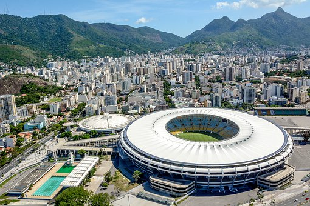

Cultural Facts
Brazil is one of the most diverse countries in the world as it's population is about 213 million people. The people of brazil enjoy watching and playing soccer as they have brought up some of the best and most famous players such as Pelé, Ronaldinho, Ronaldo, Neymar, and many other talented players.
Languages
Portuguese is the main language spoken in Brazil followed by Germany, and Spanish.
Food
Current Events
- COVID Crisis:
- 19 million brazilians are suffering from hunger due to the coronavirus. The pandemic has cost many individuals to lose their jobs and be unemployed, which led to not being able to provide for themselves nor their family.
- On April 6th, Brazil recorded more than 4000 deaths in 24 hours due to the coronavirus, which is the highest amount of deaths for the first time since the pandemic. The deaths due to coronavirus has exceeded 366,000 making it the second highest in the world behind the United States.
Tourist Hotspots
- Cristo Redentor and Corcovado
- SugarLoaf Mountain
- Iguaçu Falls
- Copacabana
- Ipanema
- Pernambuco Beaches
- Art Museums in São Paulo

Travel Pricing
- 7 days trip to Rio de Janeiro:
- The average flight price for 1 passenger cost $1,812.
- The average price for a couple is $3,254.
- The average price for a family of 4 is $6,101.